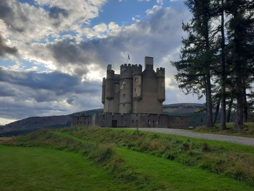
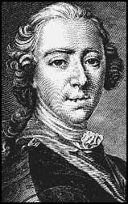
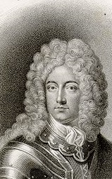

The Auld Stuarts are back again
Le retour des Stuart
Braemar Hunting Party 26th August 1715
from -
Hogg's "Jacobite Relics"
Vol.I N° 72, 1819
and - R.A.Smith's "Scotish Minstrelsy", p.70, 1821
Tune - Mélodie
Contributed by Mr Paul Ernest,
Sequenced by Christian Souchon

Braemar Castle
|
To the tune:
Scottish/English Reel First published in Robert Bremner's 'Scots Reels Collection of Scots reels and country-dances' in 1757 Cf anecdote about "Up an' waur 'm a'" . This song is quoted in "The Piper of Dundee" . |
A propos de la mélodie:
Reel anglo-écossais Première publication dans 'Le recueil de reels et contredanses d'Ecosse' de Robert Bremner en 1757. Cf l'anecdote à propos de "Up an' waur 'm a'" . Ce titre est cité dans le chant "The Piper of Dundee" (le sonneur de Dundee). |

|
1. The auld Stuarts are back again,
The auld Stuarts are back again; Let howlet Whigs do what they can, The Stuarts will be back again. Wha cares for a' their creeshy duds, And a' Kilmarnock sowen suds? We'll wauk their hides and fyle their fuds, And bring the Stuarts back again. 2. There's Ayr and Irvine, wi' the rest, And a' the cronies in the west, Lord! sic a scaw'd and scabbit nest, How they'll set up their crack again! But wad they come, or dare they come, Afore the bagpipe and the drum, We'll either gar them a' sing dumb, Or "Auld Stuarts Back Again." 3. Give an ear unto my loyal sang, A' ye that ken the right frae wrang, And a' that look and think it lang For auld Stuarts back again. Were ye wi' me to chase the rae, Out-owre the hills and far away, And saw the lords were there that day, To bring the Stuarts back again? 4. There ye might see the noble Mar, Wi' Athol, Huntly and Traquair, Seaforth, Kilsyth, and Aldubair, And mony mae, whatreck, again. Then what are a' their westland crews? We'll gar the tailors tack again: Can they forestand the tartan trews, And auld Stuarts back again? |
1. Les anciens Stuart sont de retour,
Les anciens Stuart sont de retour; En dépit des cris de vautours Des Whigs, les Stuarts reviennent. Qu'importent leurs haillons poisseux, Que Kilmarnock soit tout fangeux; Tannons leurs peaux, taillons leurs queues, Et que les Stuarts reviennent! 2. Il y a Ayr, Irvine et le reste, Et tout ce beau monde de l'ouest, Mélange de lèpre et de peste, Prêt à faire de beaux discours! Mais s'il ose venir un jour Devant nos sonneurs, nos tambours, Qu'il se taise ou dise à tour, "Que les Stuarts reviennent!" 3. Prêtez donc l'oreille à mon chant, Distinguez le bon du méchant, Vous qui pensez qu'il est grand temps Que les Stuarts reviennent. Si comme moi, chassant le cerf, Vous parcouriez nos monts hier, Vous sauriez que nos chefs s'affairent Pour que les Stuarts reviennent? 4. Vous auriez vu le noble Mar, Avec Athol, Huntly , Traquair, Seaforth, Kilsyth et Aldubair, Et bien d'autres, que sais-je. Que peuvent à l'ouest tous ces gens? Tailleurs, de nouveaux vêtements!: Gare aux culottes de tartan, Et aux Stuarts qui reviennent! Trad. Chr.Souchon (c) 2004 |
|
JOHN, EARL OF MAR and eleventh Lord ERSKINE
(and Chief of Clan Erskine) was in the reign of Queen Ann appointed Secretary of State for Scotland and assisted the Government to carry the Treaty of Union through the Scottish Parliament. The Jacobites who made the utmost efforts in Parliament and the country to obstruct and defeat the passing of the Treaty, were extremely enraged at the Earl of Mar.
The Queen died on the 1st of August, 1714 and the Elector of Hanover was proclaimed King, under the title of George I. The Earl offered service, but on September 24, 1714, he was dismissed from the office of Secretary of State for Scotland, and the Duke of Montrose appointed to it. So the Earl resolved to be revenged.
He proceeded to Braemar, inviting, as he advanced northward, the Highland Chiefs to join him at a great HUNTING PARTY in the forest of Mar. The memorable gathering met on the 26th of August at Braemar. The party then assembled round the Earl of Mar, as stated in this song:
|
JOHN, COMTE DE MAR et 11ème Lord ERSKINE (et Chef du Clan Erskine) fut nommé par la Reine Anne Secrétaire d'Etat pour l'Ecosse et aida le gouvernement à faire appliquer le Traité d'Union par le Parlement Ecossais. Les Jacobites qui au sein du Parlement et dans le pays mettaient tout en oeuvre pour faire obstruction au Traité et le mettre en échec lui vouaient une haine farouche.
La Reine mourut le 1er août 1714 et l'Electeur de Hanovre fut proclamé Roi, sous le nom de George Ier. Le Comte lui offrit ses services, mais le 24 septembre 1714 il fut démis de ses fonctions de Secrétaire d'Etat pour l'Ecosse et remplacé par le Duc de Montrose. Il résolut de se venger. Il se rendit à Braemar, invitant, alors qu'il avançait vers le nord, les Chefs de Clans des Highlands à venir le rejoindre à une grande PARTIE DE CHASSE dans la forêt de Mar. Ce mémorable rassemblement eut lieu le 26 août à Braemar. Comme indiqué dans ce chant étaient réunis autour du Comte de Mar: - Alexandre Gordon, Marquis de HUNTLY (alias "Cockolorum"), - William Murray, le fils aîné du Marquis de Tullibardine, Duc d'ATHOLL (et Chef du Clan Murray), - le Comte de TRAQUAIR (au sud d'Edimbourg), - William McKenzie, 5ème Comte de SEAFORTH (dont le fils Kenneth se rangea du côté des Anglais en 1745), - William Livingstone (un "sept" du Clan Stewart d'Appin), troisième Vicomte KILSYTH, - le laird d'AULDBAR (les terres d'Auldbar appartenaient depuis 1670 aux Young, une famille des Borders) et bien d'autres. Le nombre total des participants approchait les 800. - AYR: mentionné dans le chant Jacobite "Aikendrum" . James Hogg note: "Impossible de rien dire à propos de ce bailli Ayr..."(Ici, AYR est peut-être HAY ) - Le 14ème Laird IRVINE, décrit comme encore hésitant dans ce chant, combattit dans le camp Jacobite à Sherrifmuir en 1715. Il fut grièvement blessé à la tête pendant la bataille et mourut peu après. - William Boyd, 3ème comte de KILMARNOCK (mort en 1717) fut un partisan des rois de Hanovre et combattit pour Georges I au cours du soulèvement Jacobite de 1715. Son fils William commença par soutenir le régime en place, mais en 1745, il fut pressé par sa femme de se ranger du côté de Charles Edouard Stuart qui fit de lui son conseiller privé, avant de le nommer colonel de la garde, puis général. Il combattit à Falkirk et à Culloden, où il fut fait prisonnier et fut décapité à la Tour de Londres le 18 août 1746, en même temps que Balmerino , bien qu'il ait déclaré regretter sa participation à la rébellion au moment de son exécution. Le 3 septembre 1715, une nouvelle réunion ("HIGHLAND QUORUM") eut lieu au château d'Aboyne pour régler les détails du soulèvement projeté. Y participaient: le Marquis de Tullibardine, le Comte Marischal, le Comte de Southesk et Lord Huntly; Glengarry au nom des McDonald, Glenderule au nom du Comte de Breadalbane, des gentilshommes de l'Argyleshire; le Lieutenant Général Hamilton, Major Gordon ("Second-sighted Sandie") et quelques autres. Le 6 septembre, la levée de l'étendard des Stuarts eut lieu au bourg Castletown of Braemar . L'accession de JACQUES VIII d'Ecosse / III d'Angleterre, successeur de son père décédé en 1701, fut proclamée dans les cités et les bourgs du Nord. Le 20 Septembre, à la tribune de la Croix de marché de Castlegate à Aberdeen, on donna lecture d'un document proclamant l'accession de Jacques VIII au trône de ses ancêtres. |


The Chevalier de Saint Georges, the Old Pretender
John Erskin, 6th and 23th Earl of Mar